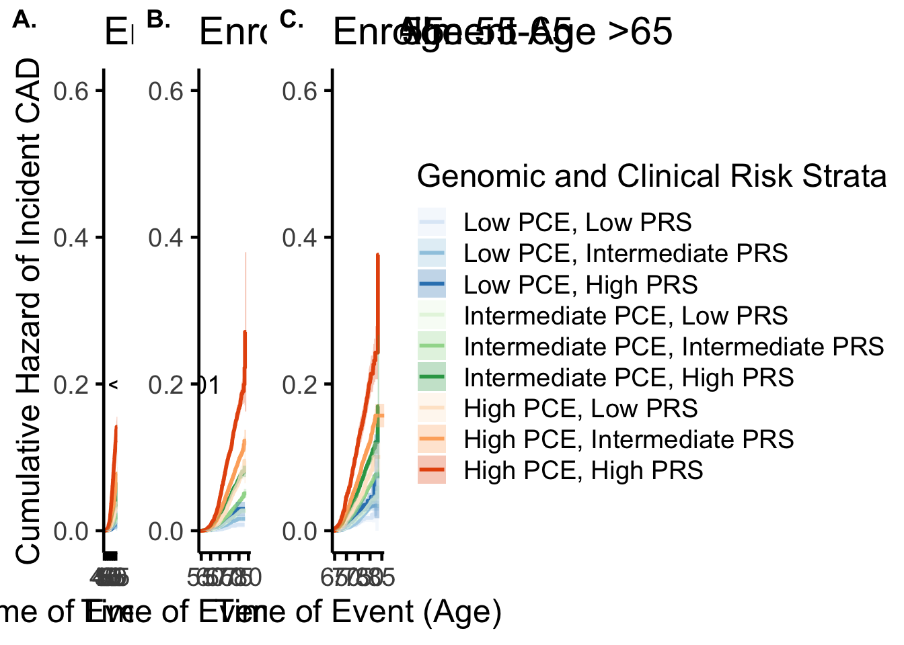

Last updated: 2024-06-12
Checks: 5 2
Knit directory: dynamicHRpaper/
This reproducible R Markdown analysis was created with workflowr (version 1.7.1). The Checks tab describes the reproducibility checks that were applied when the results were created. The Past versions tab lists the development history.
The R Markdown is untracked by Git. To know which version of the R
Markdown file created these results, you’ll want to first commit it to
the Git repo. If you’re still working on the analysis, you can ignore
this warning. When you’re finished, you can run
wflow_publish to commit the R Markdown file and build the
HTML.
Great job! The global environment was empty. Objects defined in the global environment can affect the analysis in your R Markdown file in unknown ways. For reproduciblity it’s best to always run the code in an empty environment.
The command set.seed(20240612) was run prior to running
the code in the R Markdown file. Setting a seed ensures that any results
that rely on randomness, e.g. subsampling or permutations, are
reproducible.
Great job! Recording the operating system, R version, and package versions is critical for reproducibility.
Nice! There were no cached chunks for this analysis, so you can be confident that you successfully produced the results during this run.
Using absolute paths to the files within your workflowr project makes it difficult for you and others to run your code on a different machine. Change the absolute path(s) below to the suggested relative path(s) to make your code more reproducible.
| absolute | relative |
|---|---|
| ~/dynamicHRpaper// | . |
Great! You are using Git for version control. Tracking code development and connecting the code version to the results is critical for reproducibility.
The results in this page were generated with repository version 9d06964. See the Past versions tab to see a history of the changes made to the R Markdown and HTML files.
Note that you need to be careful to ensure that all relevant files for
the analysis have been committed to Git prior to generating the results
(you can use wflow_publish or
wflow_git_commit). workflowr only checks the R Markdown
file, but you know if there are other scripts or data files that it
depends on. Below is the status of the Git repository when the results
were generated:
Untracked files:
Untracked: Figs/
Untracked: analysis/.DS_Store
Untracked: analysis/Fig1.Rmd
Untracked: analysis/Fig1_pcesd.Rmd
Untracked: analysis/Fig1b.Rmd
Untracked: analysis/Fig2.Rmd
Untracked: analysis/Fig4.Rmd
Untracked: analysis/Fig5.Rmd
Untracked: analysis/Figure3.Rmd
Untracked: analysis/GenerationofRawFiles/
Untracked: analysis/NRI.Rmd
Untracked: analysis/SuppASCVD.Rmd
Untracked: analysis/cumulativeinc.Rmd
Untracked: analysis/density.Rmd
Untracked: analysis/newtables.Rmd
Untracked: analysis/zph.Rmd
Untracked: code/utils.R
Untracked: data/amit_df.rds
Untracked: data/amit_df_with_pc_correction.rds
Untracked: data/baseline_withPCS.rds
Untracked: data/fh_full.rds
Untracked: data/fh_prs.rds
Untracked: data/fhs_prs_with_pc_corrrection.rds
Untracked: data/followupdates.rds
Untracked: data/genotype_data_nodup.eigenvec
Untracked: output/amit_df_with_pc_correction.rds
Untracked: output/fhs_prs_with_pc_corrrection
Untracked: output/fhs_prs_with_pc_corrrection.rds
Untracked: output/h1hs_withPC.rds
Untracked: output/hall_withPC.rds
Untracked: output/hallpce.rds
Untracked: output/hazards_fh_EQ_withPC_corrections.rds
Untracked: output/hazards_fh_EQ_withPC_corrections_sex0.rds
Untracked: output/hazards_fh_EQ_withPC_corrections_sex1.rds
Untracked: output/hazards_rate_UKB_amit_EQ_withPCcorrection.rds
Untracked: output/hazards_rate_lowerbound_amit_EQ_withPCcorrection.rds
Untracked: output/hazards_rate_lowerbound_fh_EQ_withPC_corrections.rds
Untracked: output/hazards_rate_lowerbound_fh_EQ_withPC_corrections_sex0.rds
Untracked: output/hazards_rate_lowerbound_fh_EQ_withPC_corrections_sex1.rds
Untracked: output/hazards_rate_upperbound_amit_EQ_withPCcorrection.rds
Untracked: output/hazards_rate_upperbound_fh_EQ_withPC_corrections.rds
Untracked: output/hazards_rate_upperbound_fh_EQ_withPC_corrections_sex0.rds
Untracked: output/hazards_rate_upperbound_fh_EQ_withPC_corrections_sex1.rds
Untracked: output/hrindex_fhs_eq_with_pc.csv
Untracked: output/hrindex_ukb_eq.csv
Untracked: output/r2_withPC.rds
Untracked: output/r2fhs_withPC.rds
Untracked: output/r2index_fhs_eq_with_pc.csv
Untracked: output/r2index_ukb_eq.csv
Untracked: output/r2pce.rds
Unstaged changes:
Modified: .DS_Store
Modified: analysis/about.Rmd
Note that any generated files, e.g. HTML, png, CSS, etc., are not included in this status report because it is ok for generated content to have uncommitted changes.
There are no past versions. Publish this analysis with
wflow_publish() to start tracking its development.
dyoung=df[df$phenos.enrollment<55,]
dyoung$pce.age=scale(dyoung$ascvd_10y_accaha_all)
dyoung$pce.r=rank(dyoung$pce.age)/length(dyoung$pce.age)
dyoung$pce.cat=cut(dyoung$pce.r,breaks=c(0,0.20,0.80,1))
dyoung$Interaction=interaction(dyoung$prscat,dyoung$pce.cat)
## now with interaction
fit <- survfit(Surv(phenos.CAD_censor_age,phenos.has_CAD)~Interaction, data=dyoung)
#fit <- survfit(Surv((phenos.CAD_censor_age), phenos.has_CAD) ~prscat, data=df[df$phenos.enrollment<55,])
g_young=ggsurvplot(fit,
pval = TRUE, conf.int = TRUE,
fun="cumhaz",
censor=FALSE,
xlim = c(40, 67),
ylim=c(0,0.6),
#xlab = "Time since Enrollment",
xlab = "Time of Event (Age)",
ylab = "Cumulative Hazard of Incident CAD",
#ylim=c(0,0.15),
title = "Enrollment Age <55",
legend.title = "Genomic and Clinical Risk Strata",
ggtheme = theme_classic2(base_size=18),
palette=c(colorRampPalette(c("#DEEBF7", "#9ECAE1", "#3182BD"))(3),
colorRampPalette(c("#E5F5E0", "#A1D99B", "#31A354"))(3),
colorRampPalette(c("#FEE6CE", "#FDAE6B", "#E6550D"))(3)),break.x.by = 5,
legend.labs = c("Low PCE, Low PRS",
"Low PCE, Intermediate PRS" ,
"Low PCE, High PRS",
"Intermediate PCE, Low PRS",
"Intermediate PCE, Intermediate PRS",
"Intermediate PCE, High PRS",
"High PCE, Low PRS",
"High PCE, Intermediate PRS",
"High PCE, High PRS"))
###
dmid=df[df$phenos.enrollment>55&df$phenos.enrollment<65,]
dmid$pce.age=scale(dmid$ascvd_10y_accaha_all)
dmid$pce.r=rank(dmid$pce.age)/length(dmid$pce.age)
dmid$pce.cat=cut(dmid$pce.r,breaks=c(0,0.20,0.80,1))
dmid$Interaction=interaction(dmid$prscat,dmid$pce.cat)
### interaction
fit <- survfit(Surv(phenos.CAD_censor_age,phenos.has_CAD)~Interaction, data=dmid)
g_mid=ggsurvplot(fit,
pval = TRUE,
conf.int = TRUE,
censor=FALSE,
##risk.table = F,
##risk.table.col = "strata",
fun="cumhaz",
#xlim = c(0, 15),
xlim = c(55, 80),
ylim=c(0,0.6),
#xlab = "Time since Enrollment",
xlab = "Time of Event (Age)",
ylab = "Cumulative Hazard",
#ylim=c(0,0.15),
title = "Enrollment Age 55-65",
legend.title = "PRS:PCE Rank",
ggtheme = theme_classic2(base_size=18),
#font.family = "Arial",
# font.family = "Arial",
break.x.by = 5,
palette=c(colorRampPalette(c("#DEEBF7", "#9ECAE1", "#3182BD"))(3),
colorRampPalette(c("#E5F5E0", "#A1D99B", "#31A354"))(3),
colorRampPalette(c("#FEE6CE", "#FDAE6B", "#E6550D"))(3)),
legend.labs = c("Low PCE, Low PRS",
"Low PCE, Intermediate PRS" ,
"Low PCE, High PRS",
"Intermediate PCE, Low PRS",
"PCE Intermediate, Intermediate PRS",
"Intermediate PCE, High PRS",
"High PCE, Low PRS",
"High PCE, Intermediate PRS",
"High PCE, High PRS"))
###
dold=df[df$phenos.enrollment>65,]
dold$pce.age=scale(dold$ascvd_10y_accaha_all)
dold$pce.r=rank(dold$pce.age)/length(dold$pce.age)
dold$pce.cat=cut(dold$pce.r,breaks=c(0,0.20,0.80,1))
dold$Interaction=interaction(dold$prscat,dold$pce.cat)
### Interaction
fit <- survfit(Surv(phenos.CAD_censor_age, phenos.has_CAD)~Interaction, data=dold)
g_old=ggsurvplot(fit,
pval = TRUE, conf.int = TRUE,censor=FALSE,
##risk.table = F,
##risk.table.col = "strata",
fun="cumhaz",
#xlim = c(0, 15),
xlim = c(65, 85),
ylim=c(0,0.6),
#xlab = "Time since Enrollment",
xlab = "Time of Event (Age)",
#ylab = "Cumulative Hazard",
#ylim=c(0,0.15),
title = "Enrollment Age >65",
legend.title = "PRS:PCE Rank",
ggtheme = theme_classic2(base_size=18),
#font.family = "Arial",
palette=c(colorRampPalette(c("#DEEBF7", "#9ECAE1", "#3182BD"))(3),
colorRampPalette(c("#E5F5E0", "#A1D99B", "#31A354"))(3),
colorRampPalette(c("#FEE6CE", "#FDAE6B", "#E6550D"))(3)),
break.x.by = 5,
legend.labs = c("Low PCE:Low PRS",
"Low PCE:Intermediate PRS" ,
"Low PCE:High PRS",
"Intermediate PCE:Low PRS",
"PCE Intermediate:Intermediate PRS",
"Intermediate PCE:High PRS",
"High PCE:Low PRS",
"High PCE:Intermediate PRS",
"High PCE:High PRS"))gg1=ggarrange(g_young$plot,g_mid$plot+labs(y=NULL),g_old$plot+labs(y=NULL),nrow=1,ncol=3,labels=c("A.","B.","C."),common.legend = T,legend="right")
gg1
ggsave(gg1,dpi=300,filename = "Figs/Fig3/interaction_time_byage_withPCS.tiff",height=10,width = 18,create.dir = TRUE)✔ Created directory: 'Figs/Fig3'.get_cumI=function(ggsurvplot,stratum){
stratum_data <- ggsurvplot$data.survplot[ggsurvplot$data.survplot$strata == stratum, ]
cumulative_hazard <- -log(stratum_data$surv)
cum_haz_se=stratum_data$std.err/stratum_data$surv
return(list(ch=cumulative_hazard[length(cumulative_hazard)],se=(stratum_data$std.err/stratum_data$surv)[length(cumulative_hazard)]))
}
get_cumI(g_young,stratum="Interaction=low.(0,0.2]")$ch
[1] 0.004525493
$se
[1] 0.001113627get_cumI(g_young,stratum="Interaction=high.(0.8,1]")$ch
[1] 0.1416114
$se
[1] 0.008012507get_cumI(g_young,stratum="Interaction=high.(0.8,1]")$ch-get_cumI(g_young,stratum="Interaction=high.(0.8,1]")$se*1.96[1] 0.1259069get_cumI(g_young,stratum="Interaction=high.(0.8,1]")$ch+get_cumI(g_young,stratum="Interaction=high.(0.8,1]")$se*1.96[1] 0.1573159get_cumI(g_mid,stratum="Interaction=low.(0,0.2]")$ch
[1] 0.008308347
$se
[1] 0.002048986get_cumI(g_mid,stratum="Interaction=high.(0.8,1]")$ch
[1] 0.2710532
$se
[1] 0.07265383get_cumI(g_old,stratum="Interaction=low.(0,0.2]")$ch
[1] 0.04624608
$se
[1] 0.02588439get_cumI(g_old,stratum="Interaction=low.(0,0.2]")$ch-get_cumI(g_old,stratum="Interaction=low.(0,0.2]")$se*1[1] 0.02036169get_cumI(g_old,stratum="Interaction=low.(0,0.2]")$ch+get_cumI(g_old,stratum="Interaction=low.(0,0.2]")$se*1[1] 0.07213047get_cumI(g_old,stratum="Interaction=low.(0,0.2]")$ch
[1] 0.04624608
$se
[1] 0.02588439get_cumI(g_old,stratum="Interaction=high.(0.8,1]")$ch-get_cumI(g_old,stratum="Interaction=high.(0.8,1]")$se*1[1] 0.1797599get_cumI(g_old,stratum="Interaction=high.(0.8,1]")$ch+get_cumI(g_old,stratum="Interaction=high.(0.8,1]")$se*1[1] 0.5728429get_cumI=function(data,stratum){
fit <- survfit(Surv(phenos.CAD_censor_age,phenos.has_CAD)~1, data=data[data$Interaction==stratum])
cumulative_hazard <- fit$cumhaz[length(fit$cumhaz)]
cum_haz_se=fit$std.err[length(fit$cumhaz)]
return(list(ch=cumulative_hazard,se=cum_haz_se))
}
get_cumI(dyoung,stratum="low.(0,0.2]")$ch
[1] 0.004524879
$se
[1] 0.001108599get_cumI(dyoung,stratum="high.(0.8,1]")$ch
[1] 0.1415855
$se
[1] 0.006954524get_cumI(dmid,stratum="low.(0,0.2]")$ch
[1] 0.008306283
$se
[1] 0.002032033get_cumI(dmid,stratum="high.(0.8,1]")$ch
[1] 0.2695373
$se
[1] 0.05540406get_cumI(dold,stratum="low.(0,0.2]")$ch
[1] 0.04594303
$se
[1] 0.0247146get_cumI(dold,stratum="high.(0.8,1]")$ch
[1] 0.3675943
$se
[1] 0.1349052## to get standard erro
# https://dominicmagirr.github.io/post/2022-01-18-be-careful-with-standard-errors-in-survival-survfit/
### http://www.sthda.com/english/wiki/survival-analysis-basics
# Get unique levels of the strata variable
strata_levels <- unique(dyoung$Interaction)
# Loop through each level of the strata
for (strata_level in c("low.(0,0.2]","high.(0.8,1]")) {
# Subset the survival object for the current strata level
strata_surv <- survfit(Surv(phenos.CAD_censor_age,phenos.has_CAD)~1, data=dyoung[dyoung$Interaction==strata_level,])
# Calculate the cumulative hazard
cumhaz <- -log(strata_surv$surv)[length(strata_surv$surv)]
lower=-log(strata_surv$upper)[length(strata_surv$surv)]
upper=-log(strata_surv$lower)[length(strata_surv$surv)]
# Print the results for the current strata level
cat("Strata Level:", strata_level, "\n")
cat("Cumulative Hazard:", cumhaz, "\n")
cat("Cumulative Hazard Confidence Interval:", c(lower,upper), "\n\n")
}Strata Level: low.(0,0.2]
Cumulative Hazard: 0.004525493
Cumulative Hazard Confidence Interval: 0.002352679 0.006698307
Strata Level: high.(0.8,1]
Cumulative Hazard: 0.1416114
Cumulative Hazard Confidence Interval: 0.1279808 0.155242 # Loop through each level of the strata
for (strata_level in c("low.(0,0.2]","high.(0.8,1]")) {
# Subset the survival object for the current strata level
strata_surv <- survfit(Surv(phenos.CAD_censor_age,phenos.has_CAD)~1, data=dold[dold$Interaction==strata_level,])
# Calculate the cumulative hazard
cumhaz <- -log(strata_surv$surv)[length(strata_surv$surv)]
fit=strata_surv
lower=fit$cumhaz[length(fit$cumhaz)]-1.96*fit$std.chaz[length(fit$cumhaz)]
upper=fit$cumhaz[length(fit$cumhaz)]+1.96*fit$std.chaz[length(fit$cumhaz)]
lower2=-log(strata_surv$upper)[length(strata_surv$surv)]
upper2=-log(strata_surv$lower)[length(strata_surv$surv)]
# Print the results for the current strata level
cat("Strata Level:", strata_level, "\n")
cat("Cumulative Hazard:", cumhaz, "\n")
cat("Cumulative Hazard Confidence Interval symmetric:", c(lower,upper), "\n\n")
cat("Cumulative Hazard Confidence Interval log:", c(lower2,upper2), "\n\n")
}Strata Level: low.(0,0.2]
Cumulative Hazard: 0.04624608
Cumulative Hazard Confidence Interval symmetric: -0.001941962 0.09382802
Cumulative Hazard Confidence Interval log: 0 0.0946858
Strata Level: high.(0.8,1]
Cumulative Hazard: 0.3763014
Cumulative Hazard Confidence Interval symmetric: 0.1199381 0.6152506
Cumulative Hazard Confidence Interval log: 0.1118921 0.6407107 #Among individuals with CAD <55 years, XXX (XXX%) had high (>20th # percentile) PRS and XXX (XXX%) had high (>20% estimated risk) PCE.
dyoungevent=df[df$phenos.CAD_censor_age<55&df$phenos.has_CAD==1,]
sum(dyoungevent$prs.r>0.80)[1] 429t.test(dyoungevent$prs.r>0.80)
One Sample t-test
data: dyoungevent$prs.r > 0.8
t = 26.625, df = 1084, p-value < 2.2e-16
alternative hypothesis: true mean is not equal to 0
95 percent confidence interval:
0.3662531 0.4245304
sample estimates:
mean of x
0.3953917 #0.3935484
sum(dyoungevent$ascvd_10y_accaha_all>20)[1] 32t.test(dyoungevent$ascvd_10y_accaha_all>20)
One Sample t-test
data: dyoungevent$ascvd_10y_accaha_all > 20
t = 5.7395, df = 1084, p-value = 1.232e-08
alternative hypothesis: true mean is not equal to 0
95 percent confidence interval:
0.01941036 0.03957582
sample estimates:
mean of x
0.02949309 ## 0.02949309
sessionInfo()R version 4.4.0 (2024-04-24)
Platform: aarch64-apple-darwin20
Running under: macOS Sonoma 14.5
Matrix products: default
BLAS: /Library/Frameworks/R.framework/Versions/4.4-arm64/Resources/lib/libRblas.0.dylib
LAPACK: /Library/Frameworks/R.framework/Versions/4.4-arm64/Resources/lib/libRlapack.dylib; LAPACK version 3.12.0
locale:
[1] en_US.UTF-8/en_US.UTF-8/en_US.UTF-8/C/en_US.UTF-8/en_US.UTF-8
time zone: America/New_York
tzcode source: internal
attached base packages:
[1] stats graphics grDevices utils datasets methods base
other attached packages:
[1] survminer_0.4.9 ggpubr_0.6.0 dplyr_1.1.4 ggplot2_3.5.1
[5] survival_3.5-8
loaded via a namespace (and not attached):
[1] gtable_0.3.5 xfun_0.44 bslib_0.7.0 rstatix_0.7.2
[5] lattice_0.22-6 vctrs_0.6.5 tools_4.4.0 generics_0.1.3
[9] tibble_3.2.1 fansi_1.0.6 highr_0.10 pkgconfig_2.0.3
[13] Matrix_1.7-0 data.table_1.15.4 lifecycle_1.0.4 farver_2.1.2
[17] compiler_4.4.0 stringr_1.5.1 git2r_0.33.0 textshaping_0.3.7
[21] munsell_0.5.1 carData_3.0-5 httpuv_1.6.15 htmltools_0.5.8.1
[25] sass_0.4.9 yaml_2.3.8 later_1.3.2 pillar_1.9.0
[29] car_3.1-2 jquerylib_0.1.4 tidyr_1.3.1 cachem_1.1.0
[33] abind_1.4-5 km.ci_0.5-6 tidyselect_1.2.1 digest_0.6.35
[37] stringi_1.8.4 purrr_1.0.2 labeling_0.4.3 splines_4.4.0
[41] cowplot_1.1.3 rprojroot_2.0.4 fastmap_1.2.0 grid_4.4.0
[45] colorspace_2.1-0 cli_3.6.2 magrittr_2.0.3 utf8_1.2.4
[49] broom_1.0.6 withr_3.0.0 scales_1.3.0 promises_1.3.0
[53] backports_1.5.0 rmarkdown_2.26 gridExtra_2.3 ggsignif_0.6.4
[57] workflowr_1.7.1 ragg_1.3.2 zoo_1.8-12 evaluate_0.23
[61] knitr_1.46 KMsurv_0.1-5 survMisc_0.5.6 rlang_1.1.4
[65] Rcpp_1.0.12 xtable_1.8-4 glue_1.7.0 rstudioapi_0.16.0
[69] jsonlite_1.8.8 R6_2.5.1 systemfonts_1.1.0 fs_1.6.4